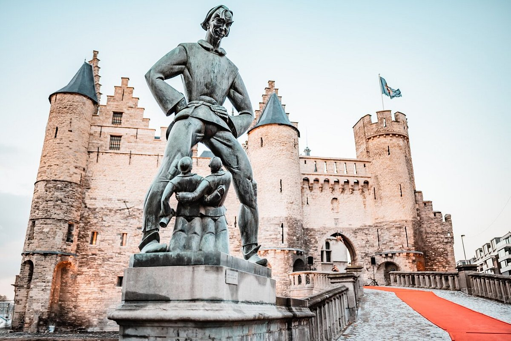
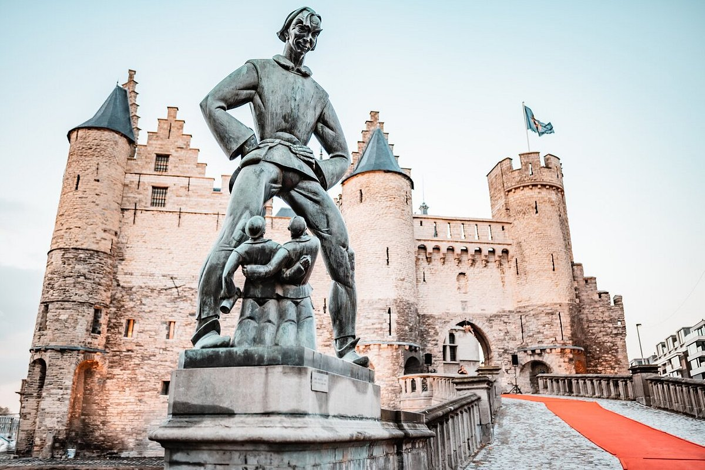
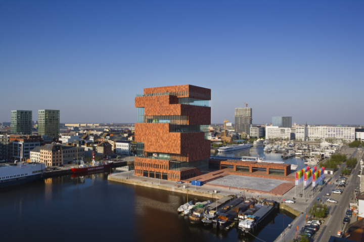
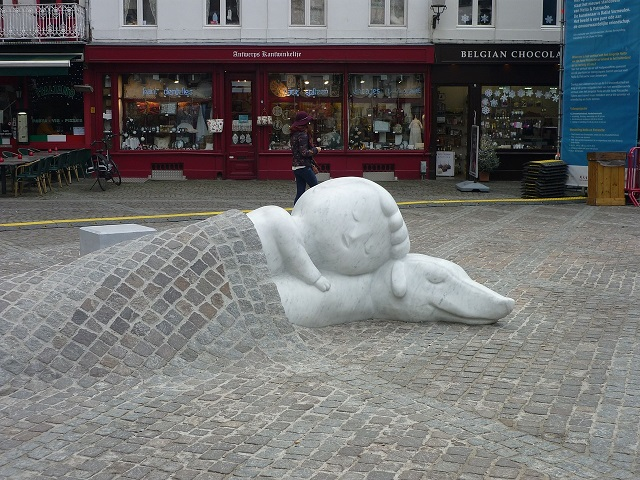
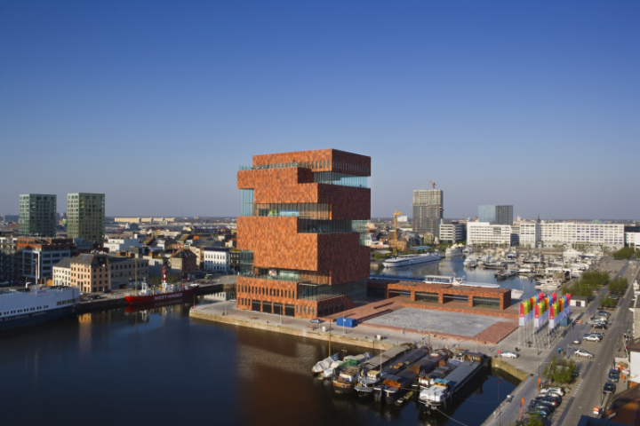
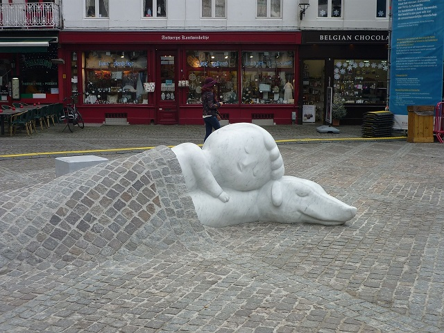

Presentación
La capital del diamante
 



 



Amberes (en neerlandés: Antwerpen pronunciado /ˈɑntˌʋɛrpə(n)/ ( escuchar); en francés: Anvers), antiguamente conocida como Antuerpia, es una ciudad belga, la capital de la homónima provincia de Amberes, en Flandes. Tenía 520 504 habitantes4 en 2017, que la hacen la ciudad más poblada del país, y con 1,2 millones de la región metropolitana, la segunda más populosa después de la de Bruselas.56 El área metropolitana comprende 1449 km². Amberes está a orillas del río Escalda, vinculado al mar del Norte por el estuario del Escalda Occidental (Westerschelde).
Se encuentra a 40 km al norte de Bruselas, y a unos 15 km al sur de la frontera con los Países Bajos. El puerto de Amberes es uno de los más grandes del mundo, el segundo de Europa78 y entre los 20 primeros a nivel mundial. La ciudad es también conocida por su industria del diamante y por el comercio.
A principios del Renacimiento la ciudad pertenecía a los Países Bajos Españoles. El siglo xv marcó el inicio del desarrollo económico de la ciudad, que se convirtió en uno de los centros comerciales más importantes del norte de Europa (a mediados del siglo xvi, los impuestos recaudados por la Corona española en el puerto de Amberes igualaban a los ingresos por las minas de plata de Potosí).
Tanto económica como culturalmente Amberes fue durante mucho tiempo una ciudad importante, especialmente antes y durante la Furia Española (1576) y posteriormente a lo largo y después de la revuelta holandesa. Amberes también fue el lugar en que se habilitó el edificio de bolsa más antiguo del mundo, construido originalmente en 1531 y reconstruido en 1872.10 En Amberes también se editaron los primeros mapas impresos en planchas de cobre.
El iniciador de este tipo de cartografía en 1570 fue Abraham Ortelius. Los habitantes de Amberes son apodados Sinjoren (pronunciación en neerlandés: /sɪnˈjoːˌrən/), a partir del título honorífico español de señor o del francés seigneur, en referencia a los nobles españoles que gobernaron la ciudad en el siglo xvii.La ciudad fue sede de los Juegos Olímpicos de 1920.
Origen del nombre
Según el folklore, en particular celebrado por una estatua en frente del ayuntamiento en la plaza Mayor (Grote Markt), la ciudad habría sido nombrada por una leyenda sobre un gigante llamado Antigoon que vivía cerca del río Escalda. Cobraba un peaje a los barqueros que pasaban, y a los que se negasen a pagarlo, les cortaba una mano y la arrojaba al río.12 Finalmente el gigante fue asesinado por un joven héroe romano llamado Silvio Brabón (en latín Silvius Brabo), que cortó la mano del gigante y la arrojó al río. De ahí el nombre Antwerpen, del neerlandés hand werpen, que significa arrojar la mano.1314
Otra teoría sostenida desde hace mucho tiempo postula que el nombre se originó en el período galorromano y provendría del latín antverpia. Antverpia vendría de Ante (antes) Verpia (deposición, sedimentación), lo que indicaría el terreno que se formaría por deposición en el interior de la curva de un río (que en realidad es el mismo origen que el germánico waerpen). Es de notar que el río Escalda, antes de un período de transición entre 600 y 750, seguía un curso diferente, que debía haber coincidido con la actual circunvalación, situando la ciudad dentro de una curva del río.15 Sin embargo, muchos historiadores piensan que sería un gran asentamiento que se llamaría 'Antverpia', pero más como un puesto de avanzada en un cruce del río.
Sin embargo, John Lothrop Motley discute, junto con numerosos etimólogos neerlandeses e historiadores, que el nombre de Amberes deriva de "anda" (a) y "werpum" (muelle)16 para dar an 't werf (en el muelle, en el mismo sentido que el actual muelle). Aan 't werp (en la urdimbre) también sería posible. Esta "warp" ('terreno arrojado') sería una colina artificial o un depósito del río, lo suficientemente alto como para permanecer seco durante la marea alta, sobre el que se podría erigir una construcción que permanecería seca. Otra palabra para werp es pol (dique), y de aquí, polders (la tierra seca tras un dique, que no queda inundada por la marea). Alfred Michiels ha sugerido que las derivaciones basadas en hand werpen, Antverpia, "en el muelle", o "en la urdimbre" , carecen de respaldo histórico en las antiguas ortografías recogidas del topónimo. Señala en cambio que en la Vida de San Eligio (Vita Eligii) de Dado del siglo vii, se registra la forma de Andoverpis. Michiels ve en ello un origen celta indicando a «aquellos que viven en ambas orillas».